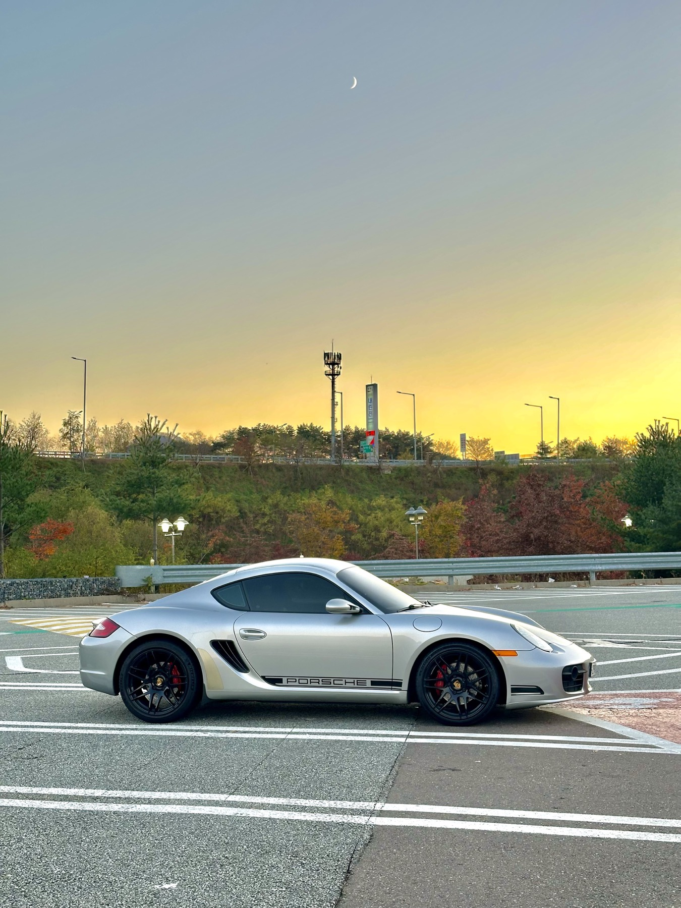

Night stop energyPhase One glimpse
Phase One garage glimpse
Phase One gives an early look at the garage energy for Korea Grand Tour 2026. It is not the final roster; two more reveals will open before the full festival line-up is complete.

Cars, bikes, teams, solo entries
The point is not to own the loudest thing in the parking lot. It is to bring a ride you care about, meet people who understand that feeling, and put real kilometers behind the story.


